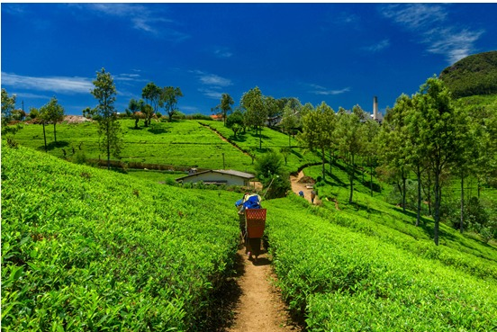

Political commitment to organic agriculture in Sikkim started in 2003. That year, the Chief Minister of Sikkim, H.E. Pawan Chamling, announced his vision for Sikkim to be India’s first organic state. In a historic declaration to the State Assembly in 2003, H.E. Chamling announced “a long awaited policy initiative of declaring Sikkim as a total Organic State”.
organic farming was perceived as the closest agricultural system to the traditional Sikkimese way of farming, which is traditionally rain-fed with low adoption of external inputs. Whereas, mainstreaming organic and agroecological farming in the whole state was seen also as a strategy to preserve ecosystems and citizen’s health, and to deliver huge socioeconomic benefits
